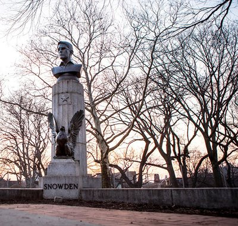

Edward Snowden

2013 Mass Surveillance Disclosure
In 2013, several like-minded journalists helped Edward Snowden, a former NSA analyst, release numerous classified documents that detailed the NSA’s a mass surveillance that was taking place in the United States as well as a number of global surveillance programs. The number of documents is often disputed, but it is believed to be in the millions. This is one of the most extensive whistleblowing cases in history because of the vast amount of documents released.
Patriot or Traitor?
Many believe that Edward Snowden was wrong because of his actions to reveal the NSA’s mass surveillance programs. In an interview with Larry King, former Vice President Dick Cheney even went as far as calling Snowden a traitor. I believe that Snowden is the farthest thing from a traitor. In fact, I would even go as far as to say he is one of the greatest patriots our country has ever seen. Snowden made huge personal sacrifices to reveal to the public that the United States government is violating our right to privacy that is laid out in the very constitution that this country was built around. Snowden may have committed three felonies to reveal this information, but does this make him wrong? Absolutely not, and it doesn’t make him a traitor either. Even President Obama said that he didn’t believe Snowden was a patriot. A man who risked it all for the love his country is a patriot in my eyes.